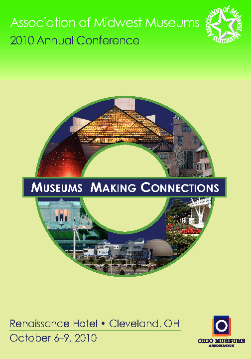
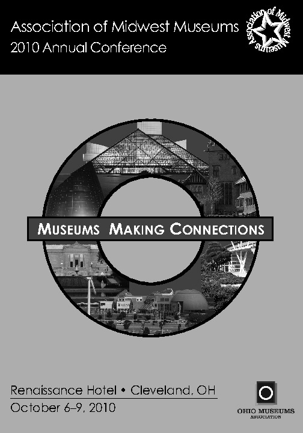

Color version for MMA'10 conference
{kind=link}
In order to retain some level of complexity to draw the reader in and hold their attention, we combined the photos in a collage and used a prominent circular shape to emphasize the idea of “connections” which is central to the conference theme.
By creating a space of connection between the physical structures and environments of the museums in the collage, as well as by biding them within the circular crop, the pictures are laid out in such a way so as to make them recognizable, but also unique.
Grey version for MMA'10 conference
{kind=link}
For our grayscale version, the bright green color was replaced with a strong black color and white text was used to create dramatic contrast and enhanced readability.
Black sections were limited to reduce ink and toner usage for repeated printing or copying. The light green color was changed to a soft gray to provide relief for the image collage, and the dark purple of the conference theme bar was softened enough to avoid conflict with the black border, but kept dark enough to still retain contrast with the white conference theme text.